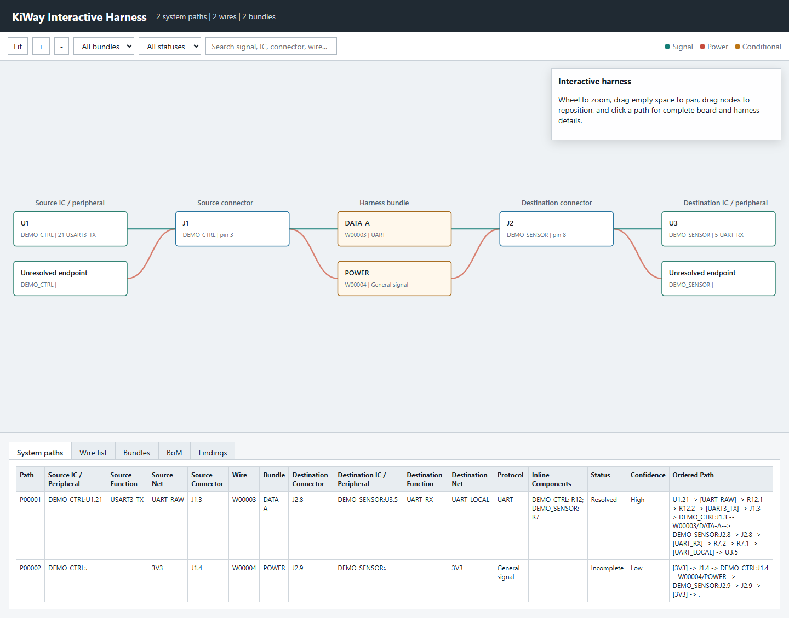

Build a reviewed system harness from board pin exports and endpoint loads. The workbench reads project data only and never modifies the PCB.

Import multiple CSV files or scan a directory recursively. A project set may contain up to 50 unique project names.
| Column | Purpose |
|---|---|
| project | Unique board or endpoint group name. |
| connector / reference | Connector reference such as J1. Required. |
| pin / pad | Connector pin identity. Required. |
| net / net name | Signal name used by indexed matching. |
| function, voltage | Documentation and voltage-conflict checks. |
| connector part, contact part | Parts used by the harness BoM. |
| load A | Endpoint current shown in the net map. |
Indexed matching groups equal net names across different connectors and projects. Use a wildcard or regex to restrict candidates. Power nets are excluded by default to prevent accidental cross-products.
DEMO_CTRL:J1 -> DEMO_IO:J2 DEMO_IO:J4 -> LOADS:P1 [offset=1] DEMO_A:J3 -> DEMO_B:J7 [map=1:3,2:4]
The first rule maps N to N. Offset changes numeric destination pins. An explicit map overrides listed pins.
Open Pin Mapping Editor, choose a source and destination connector, and click Seed N-to-N Rows. Every cell remains editable: change either pin, add or delete rows, and assign wire ID, AWG, color, bundle, splice, length, shield, and notes.
Use Validate Mapping before building. A source may appear on several rows for an intentional splice, but the validator reports it for review. Missing imported endpoints are marked unmatched rather than silently accepted.
source_project,source_connector,source_pin,destination_project,destination_connector,destination_pin,gauge_awg,length_m DEMO_CTRL,J1,1,DEMO_IO,J7,8,24,1.25 DEMO_CTRL,J1,2,DEMO_IO,J7,12,24,1.25
Import Mapping CSV and Export Mapping CSV provide round trips for engineering review and source control. Explicit table rows take precedence over duplicate automatic links.
PROJECT,REFERENCE,PIN,NET,FUNCTION,VOLTAGE,CURRENT_A,CONNECTOR_PART LOADS,MOTOR_A,1,MOTOR_POS,Drive motor,24V,3.5,DEMO-CONN
Sort tables by clicking a header. Select wires, then apply AWG, color, bundle, splice, length, and shielding. With no selection, the action applies to every link. Review unmatched, ambiguous, duplicate-destination, and voltage-conflict findings.
In Pin Extractor, build and export a Controller Map CSV for each board. Its exact traversal retains net changes, resistors, inductors, ferrites, fuses, and user-authorized active-device pin transitions. Import those CSV files with Import IC / Connector Paths.
The controller-map filename without .csv, or a Project column, must equal the board project name used in the connector pin document. The workbench joins records only when project, connector reference, and connector pin all match exactly.
On IC / Peripheral Paths, enter comma-separated reference wildcards such as U1,U2, U*, or MCU*. Build the preview and review every Conditional, Ambiguous, or Incomplete path. A missing endpoint may be retained as a connector-only path; a wildcard-excluded endpoint is omitted.
DEMO_CTRL:U1.21 -> R12.1 -> R12.2 -> J1.3 -- W00003 / DATA-A --> DEMO_SENSOR:J2.8 -> R7.2 -> R7.1 -> U3.5
The native Draft Canvas shows each connector once. Mouse wheel zooms, drag pans, and double-click inspects a connector. The self-contained interactive HTML adds separate IC/peripheral, connector, and bundle stages; wheel zoom, empty-space pan, draggable nodes, clickable path details, search, bundle/status filters, sortable tables, findings, and the procurement BoM. It requires no web connection or external script.

Export pin map, net map, wire list, system paths, procurement BoM, universal SVG, or interactive HTML. The native UI displays at most 10,000 rows; exports contain every generated row.
Engineering limitation: correspondence does not prove polarity, pin gender, mating orientation, electrical compatibility, ampacity, temperature derating, insulation, creepage, shielding, bend radius, regulatory compliance, manufacturability, or testability. Verify these before release.